# devtools::install_github("derekmichaelwright/agData")
library(agData) # Loads: tidyverse, ggpubr, ggbeeswarm, ggrepel
library(treemapify) # geom_treemap()gg_treemap <- function(area = "Canada", measurement = "Area harvested", year = 2018) {
#Prep data
xx <- agData_FAO_Crops %>%
filter(Area == area, Year == year, Measurement == measurement) %>%
arrange(desc(Value)) %>%
slice(1:25) %>%
mutate(Area = factor(Area, levels = unique(Area)))
# Plot
ggplot(xx, aes(area = Value, fill = Crop, label = Crop)) +
geom_treemap(color = "black") +
geom_treemap_text(place = "centre", grow = T, color = "white") +
scale_fill_manual(values = alpha(agData_Colors, 0.75)) +
theme_agData(legend.position = "none") +
labs(title = paste(area,"-",year,"-",measurement),
caption = "\xa9 www.dblogr.com/ | Data: STATCAN")
}mp <- gg_treemap(area = "World")
ggsave("country_treemaps_01_world.png", mp, width = 6, height = 4)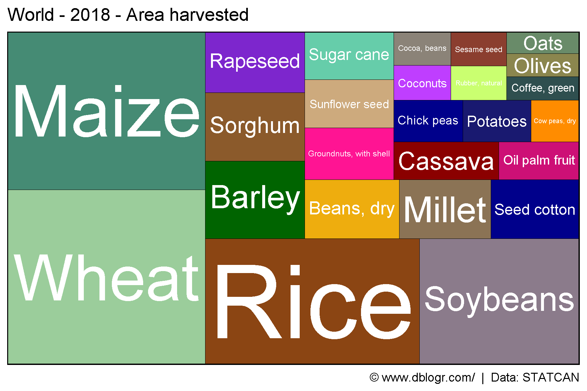
mp <- gg_treemap(area = "Canada")
ggsave("country_treemaps_02_canada.png", mp, width = 6, height = 4)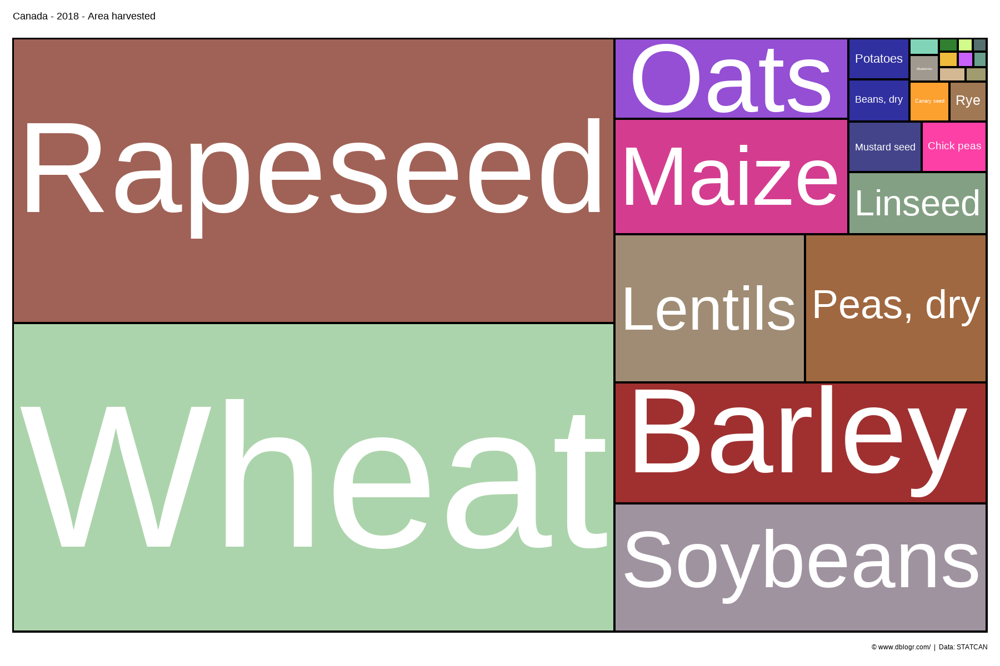
mp <- gg_treemap(area = "USA")
ggsave("country_treemaps_03_usa.png", mp, width = 6, height = 4)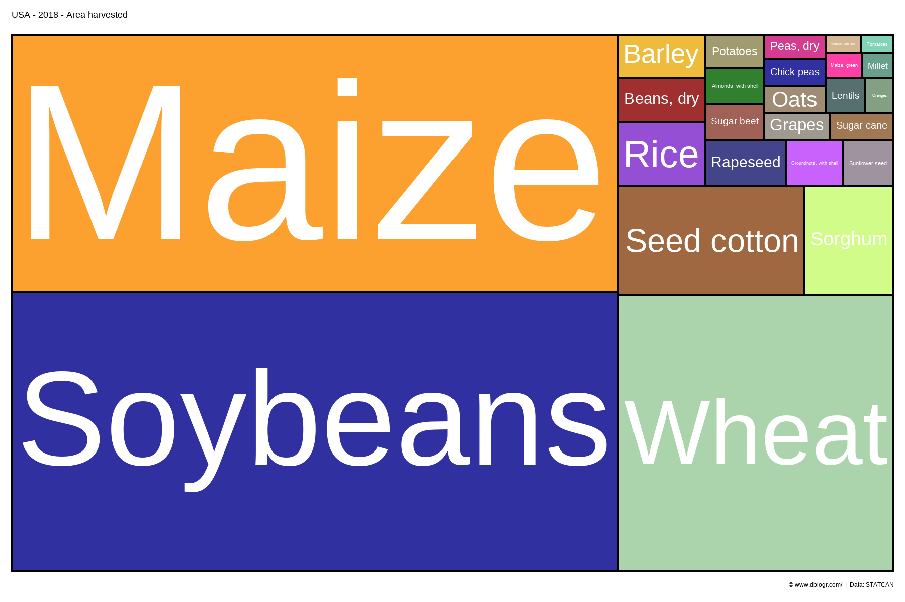
mp <- gg_treemap(area = "Mexico")
ggsave("country_treemaps_04_mexico.png", mp, width = 6, height = 4)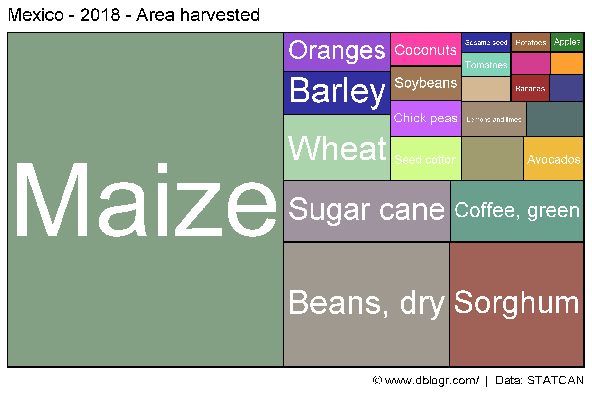
mp <- gg_treemap(area = "Germany")
ggsave("country_treemaps_05_germany.png", mp, width = 6, height = 4)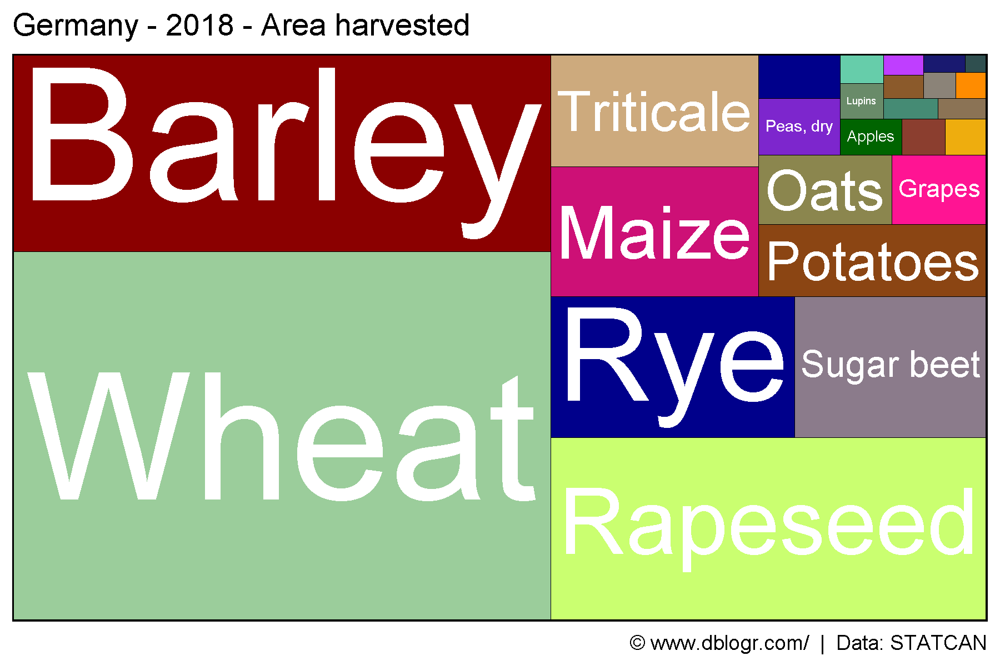
mp <- gg_treemap(area = "Russia")
ggsave("country_treemaps_06_russia.png", mp, width = 6, height = 4)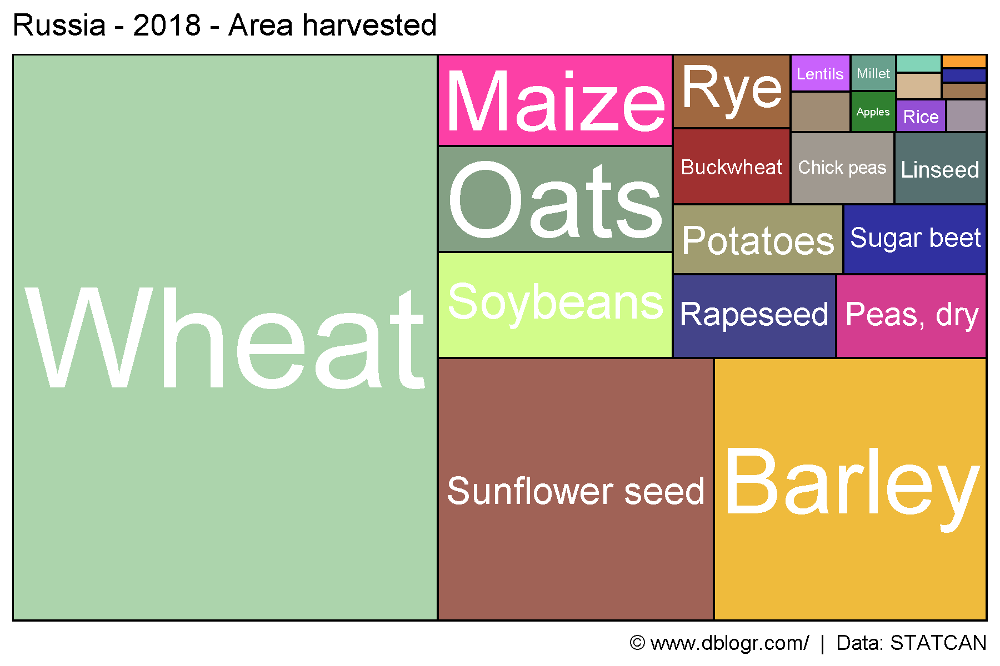
mp <- gg_treemap(area = "France")
ggsave("country_treemaps_07_france.png", mp, width = 6, height = 4)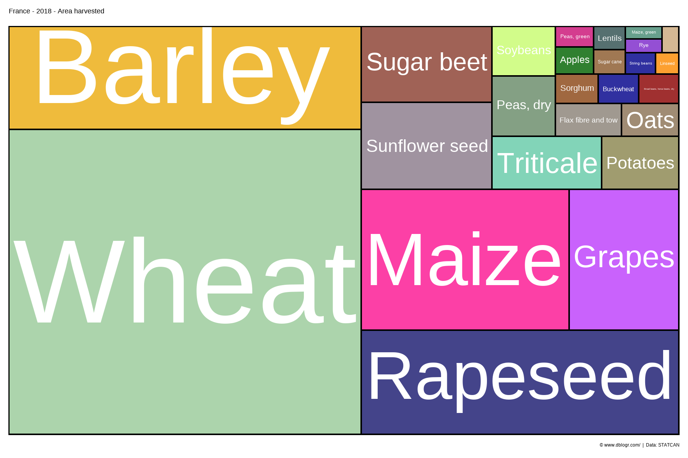
mp <- gg_treemap(area = "Spain")
ggsave("country_treemaps_08_spain.png", mp, width = 6, height = 4)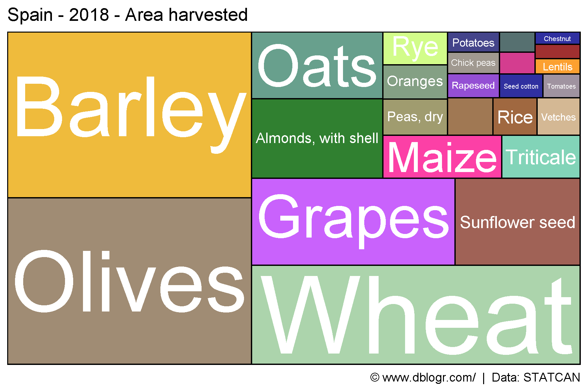
mp <- gg_treemap(area = "UK")
ggsave("country_treemaps_09_uk.png", mp, width = 6, height = 4)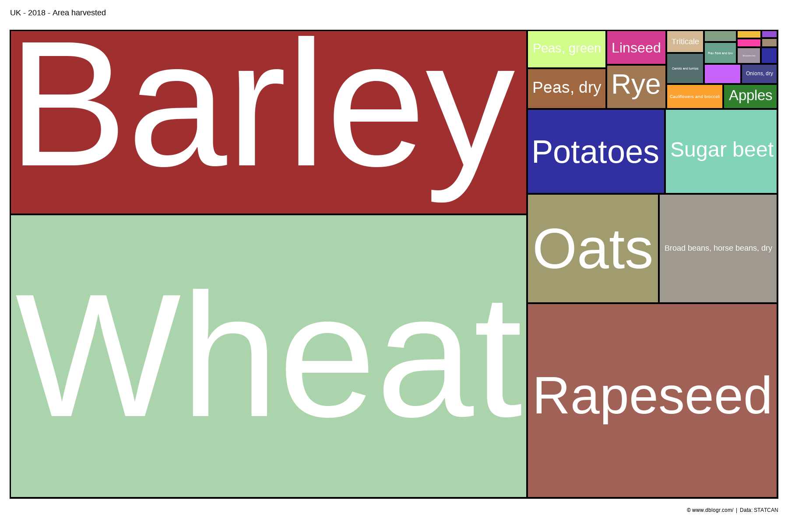
mp <- gg_treemap(area = "India")
ggsave("country_treemaps_10_india.png", mp, width = 6, height = 4)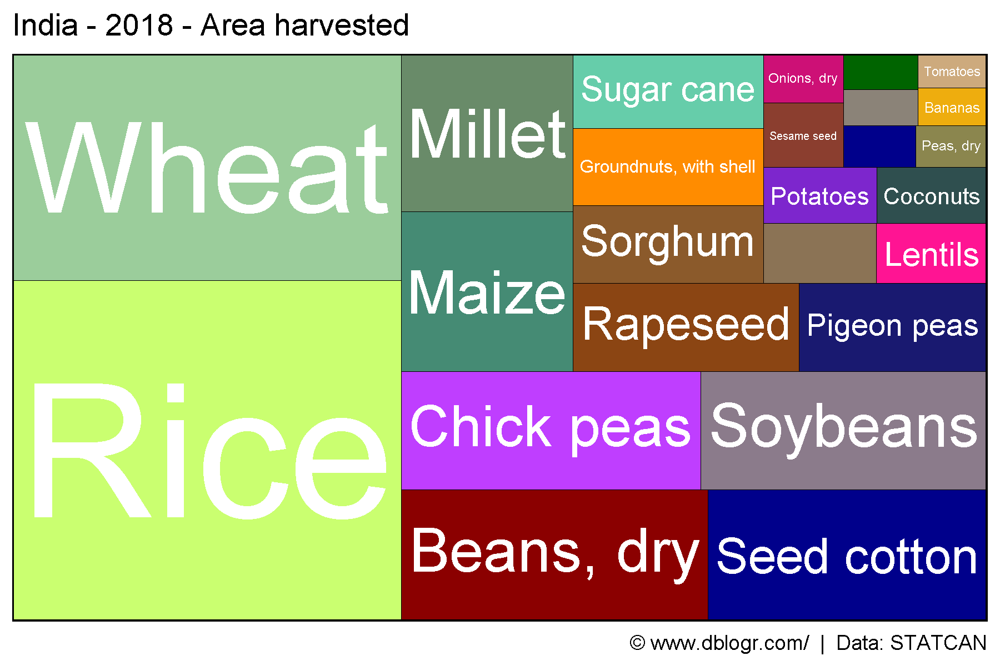
mp <- gg_treemap(area = "Nepal")
ggsave("country_treemaps_11_nepal.png", mp, width = 6, height = 4)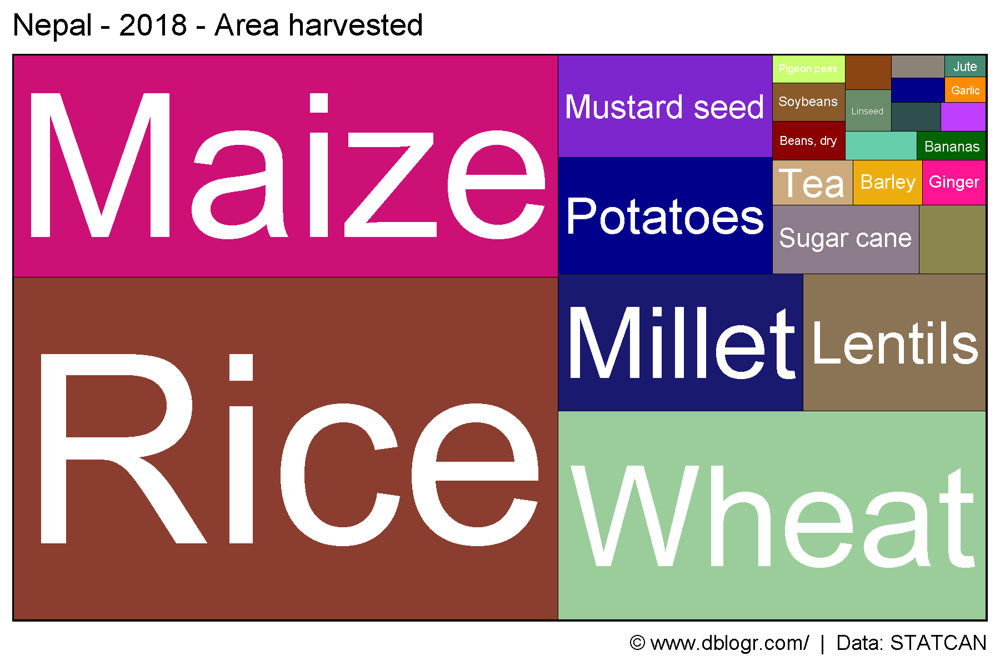
mp <- gg_treemap(area = "China")
ggsave("country_treemaps_12_china.png", mp, width = 6, height = 4)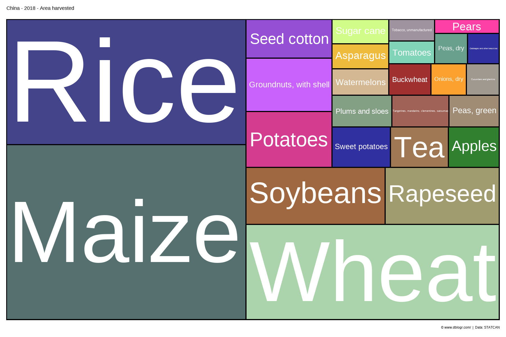
# Prep data
areas <- c("World",
levels(agData_FAO_Country_Table$Region),
levels(agData_FAO_Country_Table$SubRegion),
levels(agData_FAO_Country_Table$Country))
# Plot
pdf("country_treemaps_fao.pdf", width = 6, height = 4)
for(i in areas) {
print(gg_treemap(area = i))
}
dev.off()## png
## 2© Derek Michael Wright www.dblogr.com/